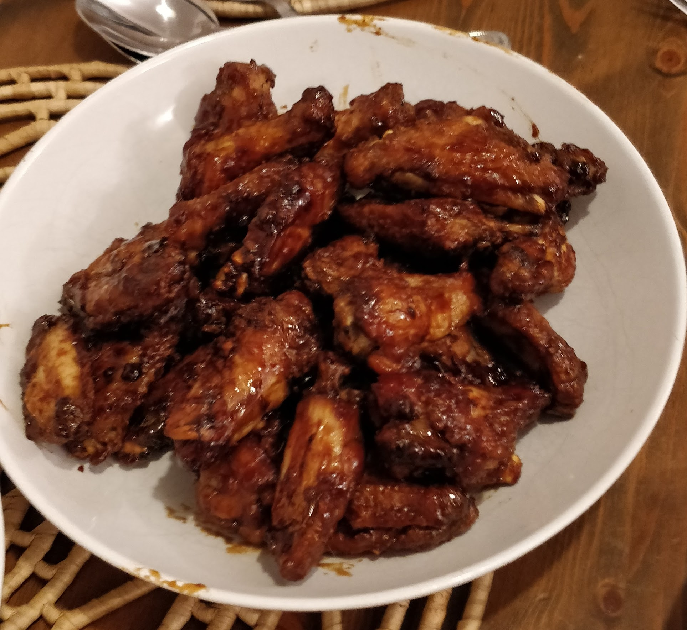

Crispy Chinese Chicken Wings
 Meat
Meat
Chinese inspired crispy oven baked wings

1 kgchicken wings4cloves garlic, chopped1 tspground ginger1 tspground black pepperpinchof saltsplashof oil1 to 2 tbspcornflour1 cuphoisin sauce
Joint the wings and place in a bowl.
Add the garlic, and sprinkle over the salt, pepper and ginger.
Add a splash of oil and mix together til evenly coated.
Refrigerate til ready to use.
Preheat the oven to Gas 6/180C fan.
Sprinkle over the cornflour and mix to coat.
Place the wings on an oiled wire rack over a baking tray and bake for about 40 mins til golden brown.
Take out of the oven and place the wings on a bowl.
Pour over the hoisin sauce and mix to coat.
Place back on the wire rack, turn the oven up to Gas 8/200C fan and put the wings back in until they are sizzling and crispy. About 10-20mins.